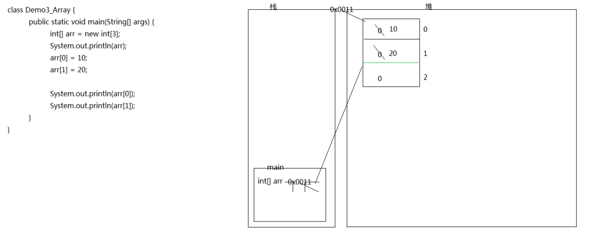
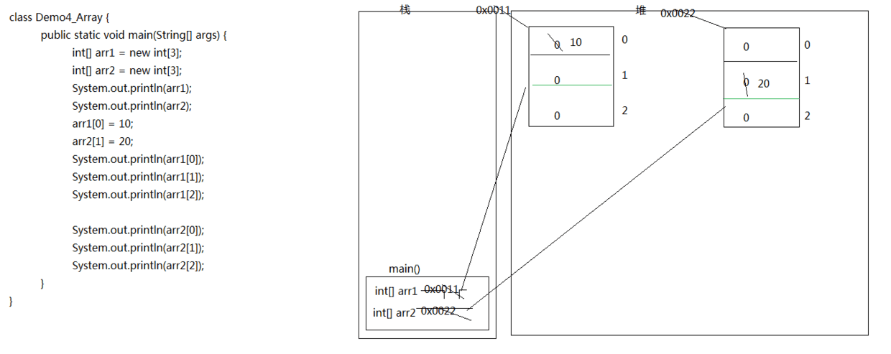
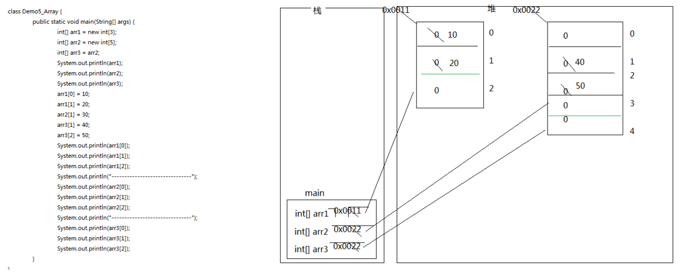
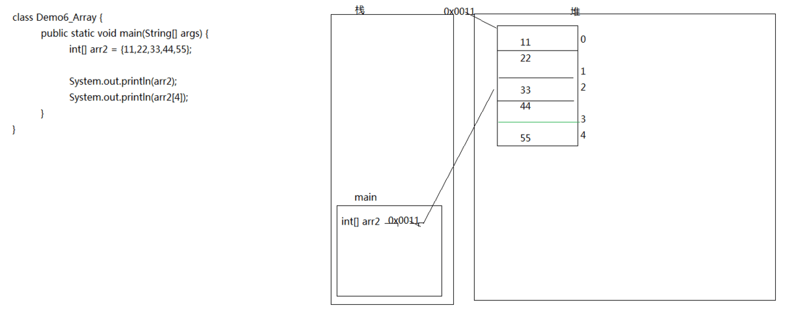
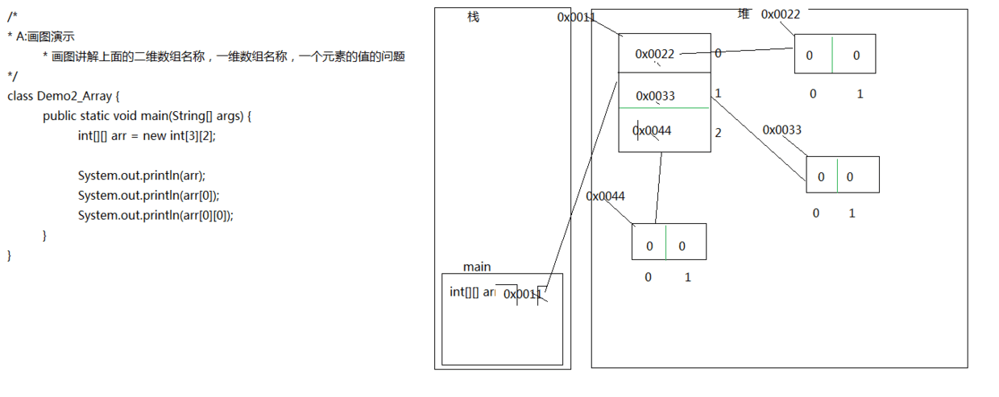
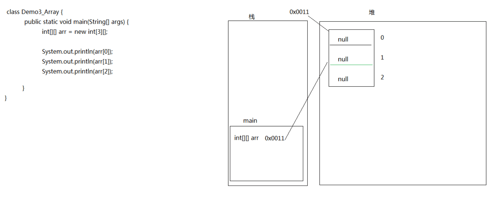
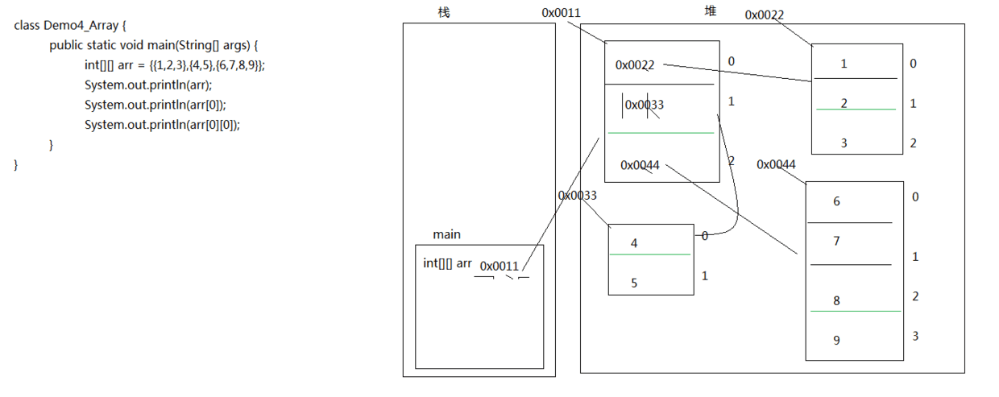
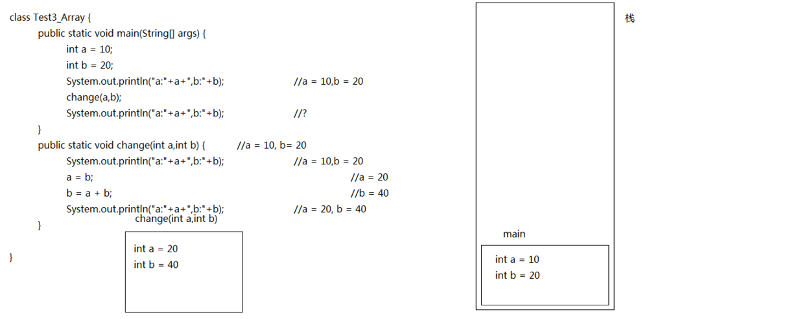

005-day05,一维数组,二维数组
05.01_Java语言基础(数组概述和定义格式说明)(了解)¶
-
A:为什么要有数组(容器)
-
为了存储同种数据类型的多个值
- B:数组概念
-
数组是存储同一种数据类型多个元素的集合。也可以看成是一个容器。
- 数组既可以存储基本数据类型，也可以存储引用数据类型。
-
C:数组定义格式
数据类型[] 数组名 = new 数据类型[数组的长度];
/* * A:为什么要有数组(容器) * 为了存储同种数据类型的多个值 * B:数组概念 * 数组是存储同一种数据类型多个元素的集合。也可以看成是一个容器。 * 数组既可以存储基本数据类型，也可以存储引用数据类型。 * C:数组定义格式 数据类型[] 数组名 = new 数据类型[数组的长度]; */ class Demo1_Array { public static void main(String[] args) { int x = 10; x = 20; System.out.println("x = " + x); //数据类型[] 数组名 = new 数据类型[数组的长度]; int[] arr = new int[5]; //可以存储五个int类型的数据 /* 左边: int:数据类型 []:代表的数组,几个中括号就代表几维数组 arr:合法的标识符 右边: new:创建新的实体或对象 int:数据类型 []:代表的数组 5:代表数组的长度 */ } }
05.02_Java语言基础(数组的初始化动态初始化)(掌握)¶
-
A:什么是数组的初始化
-
就是为数组开辟连续的内存空间，并为每个数组元素赋予值
- B:如何对数组进行初始化
- a:动态初始化 只指定长度，由系统给出初始化值
int[] arr = new int[5];- b:静态初始化 给出初始化值，由系统决定长度
-
C:动态初始化的格式：
-
数据类型[] 数组名 = new 数据类型[数组长度];
-
D:案例演示
-
输出数组名称和数组元素
/* * A:什么是数组的初始化 * 就是为数组开辟连续的内存空间，并为每个数组元素赋予值 * B:如何对数组进行初始化 * a:动态初始化 只指定长度，由系统给出初始化值 * int[] arr = new int[5]; * b:静态初始化 给出初始化值，由系统决定长度 * C:动态初始化的格式： * 数据类型[] 数组名 = new 数据类型[数组长度]; * D:案例演示 * 输出数组名称和数组元素 整数类型:byte,short,int,long默认初始化值都是0 浮点类型:float,double默认初始化值都是0.0 布尔类型:boolean默认初始化值false 字符类型:char默认初始化值'\u0000' char在内存中占的两个字节,是16个二进制位 \u0000,每一个0其实代表的是16进制的0,那么四个0就是代表16个二进制位 [I@19bb25a [ 代表是数组,几个就代表几维,[[这个就代表的是两维 I代表是int类型 @是固定的 19bb25a代表的是数组的地址值 */ class Demo2_Array { public static void main(String[] args) { //数据类型[] 数组名 = new 数据类型[数组长度]; int[] arr = new int[5]; //动态初始化,在内存中开辟连续的5块空间 System.out.println(arr[0]); //系统给出默认初始化值,整数类型的都是0 arr[0] = 10; System.out.println(arr[0]); System.out.println(arr); //[I@19bb25a 打印的是数组的地址值 } }
输出结果:
0 10 [I@97d01f 请按任意键继续. . .
05.03_Java语言基础(Java中的内存分配以及栈和堆的区别)¶
-
A:栈(掌握)
-
存储局部变量
-
B:堆(掌握)
-
存储new出来的数组或对象
-
C:方法区
-
面向对象部分讲解
-
D:本地方法区
-
和系统相关
- E:寄存器
- 给CPU使用
/* * A:栈(掌握) * 存储局部变量 局部变量:定义在方法声明上和方法中的变量 * B:堆(掌握) * 存储new出来的数组或对象 * C:方法区 * 面向对象部分讲解 * D:本地方法区 * 和系统相关 * E:寄存器 * 给CPU使用 */ class Demo3_Array { public static void main(String[] args) { int[] arr = new int[3]; //动态初始化,创建3块连续的空间 System.out.println(arr); arr[0] = 10; arr[1] = 20; System.out.println(arr[0]); System.out.println(arr[1]); } }
05.04_Java语言基础(数组的内存图解1一个数组)(掌握)¶
-
A:画图演示
-
一个数组 
05.05_Java语言基础(数组的内存图解2二个数组)(了解)¶
class Demo4_Array { public static void main(String[] args) { int[] arr1 = new int[3]; //创建数组,长度为3 int[] arr2 = new int[3]; //创建数组,长度为3 System.out.println(arr1); //打印数组的地址值 System.out.println(arr2); arr1[0] = 10; //给第一个数组中第一个元素赋值 arr2[1] = 20; //给第二个数组中第二个元素赋值 System.out.println(arr1[0]); System.out.println(arr1[1]); System.out.println(arr1[2]); System.out.println("--------------------------------------"); System.out.println(arr2[0]); System.out.println(arr2[1]); System.out.println(arr2[2]); } }
执行结果:
[I@feb48 [I@11ff436 10 0 0 -------------------------------------- 0 20 0 请按任意键继续. . .
- A:画图演示
- 二个不同的数组 
05.06_Java语言基础(数组的内存图解3三个引用两个数组)(了解)¶
//三个引用两个数组 class Demo5_Array { public static void main(String[] args) { int[] arr1 = new int[3]; int[] arr2 = new int[5]; int[] arr3 = arr2; //使用的是同一个的地址 System.out.println(arr1); System.out.println(arr2); System.out.println(arr3); arr1[0] = 10; arr1[1] = 20; arr2[1] = 30; arr3[1] = 40; arr3[2] = 50; System.out.println(arr1[0]); System.out.println(arr1[1]); System.out.println(arr1[2]); System.out.println("-------------------------------"); System.out.println(arr2[0]); System.out.println(arr2[1]); System.out.println(arr2[2]); System.out.println(arr2[3]); System.out.println(arr2[4]); System.out.println("-------------------------------"); System.out.println(arr3[0]); System.out.println(arr3[1]); System.out.println(arr3[2]); System.out.println(arr3[3]); System.out.println(arr3[4]); } }
执行结果:
[I@e0a386 [I@feb48 [I@feb48 10 20 0 ------------------------------- 0 40 50 0 0 ------------------------------- 0 40 50 0 0 请按任意键继续. . .
- A:画图演示
- 三个引用，有两个数组的引用指向同一个地址 
05.07_Java语言基础(数组的初始化静态初始化及内存图)(掌握)¶
- A:静态初始化的格式：
- 格式：数据类型[] 数组名 = new 数据类型[]{元素1,元素2,…};
- 简化格式：
- 数据类型[] 数组名 = {元素1,元素2,…};
- B:案例演示
- 对数组的解释
- 输出数组名称和数组元素
/* * A:静态初始化的格式： * 格式：数据类型[] 数组名 = new 数据类型[]{元素1,元素2,…}; * 简化格式： * 数据类型[] 数组名 = {元素1,元素2,…}; * B:案例演示 * 对数组的解释 * 输出数组名称和数组元素 * C:画图演示 * 一个数组 */ class Demo6_Array { public static void main(String[] args) { //数据类型[] 数组名 = new 数据类型[]{元素1,元素2,…}; //int[] arr = new int[5]{11,22,33,44,55}; //不允许动静结合 int[] arr2 = {11,22,33,44,55}; //静态初始化的简写形式 //int[] arr; //声明数组引用 //arr = new int[]{11,22,33,44,55}; //int[] arr2; //arr2 = {11,22,33,44,55}; //简写形式声明和赋值在同一行 System.out.println(arr2); System.out.println(arr2[4]); } }
执行结果:
[I@97d01f 55 请按任意键继续. . .
- C:画图演示
- 一个数组 
05.08_Java语言基础(数组操作的两个常见小问题越界和空指针)(掌握)¶
- A:案例演示
- a:ArrayIndexOutOfBoundsException:数组索引越界异常
- 原因：你访问了不存在的索引。
- b:NullPointerException:空指针异常
- 原因：数组已经不在指向堆内存了。而你还用数组名去访问元素。
- int[] arr = {1,2,3};
- arr = null;
- System.out.println(arr[0]);
/* * A:案例演示 * a:ArrayIndexOutOfBoundsException:数组索引越界异常 * 原因：你访问了不存在的索引。 * b:NullPointerException:空指针异常 * 原因：数组已经不在指向堆内存了。而你还用数组名去访问元素。 * int[] arr = {1,2,3}; * arr = null; * System.out.println(arr[0]); */ class Demo7_Exception { public static void main(String[] args) { int[] arr = new int[5]; //0x0011 //System.out.println(arr[-1]); //当访问数组中不存在的索引,会出现索引越界异常 arr = null; System.out.println(arr[0]); //当数组引用赋值为null,再去调用数组中的元素就会出现空指针异常 } }
05.09_Java语言基础(数组的操作1遍历)(掌握)¶
- A:案例演示
- 数组遍历：就是依次输出数组中的每一个元素。
- 数组的属性:arr.length数组的长度
- 数组的最大索引:arr.length - 1;
public static void print(int[] arr) { for (int i = 0;i < arr.length ;i++ ) { System.out.print(arr[i] + " "); } } }
05.10_Java语言基础(数组的操作2获取最值)(掌握)¶
- A:案例演示
- 数组获取最值(获取数组中的最大值最小值)
/* * A:案例演示 * 数组获取最值(获取数组中的最大值最小值) */ class Demo9_Array { public static void main(String[] args) { int[] arr = {33,77,22,44,55}; int max = getMax(arr); System.out.println(max); } /* 获取数组中最大值 1,返回值类型int 2,参数列表int[] arr */ public static int getMax(int[] arr) { int max = arr[0]; for (int i = 1;i < arr.length ;i++ ) { //从数组的第二个元素开始遍历 if (max < arr[i]) { //如果max记录的值小于的数组中的元素 max = arr[i]; //max记录住较大的 } } return max; } }
05.11_Java语言基础(数组的操作3反转)(掌握)¶
- A:案例演示
- 数组元素反转(就是把元素对调)
public static void reverseArray(int[] arr) { for (int i = 0;i < arr.length / 2 ; i++) { //arr[0]和arr[arr.length-1-0]交换 //arr[1]和arr[arr.length-1-1]交换 //arr[2]和arr[arr.lentth-1-2] //... int temp = arr[i]; arr[i] = arr[arr.length-1-i]; arr[arr.length-1-i] = temp; } }
05.12_Java语言基础(数组的操作4查表法)(掌握)¶
- A:案例演示
- 数组查表法(根据键盘录入索引,查找对应星期)
public static char getWeek(int week) { char[] arr = {' ','一','二','三','四','五','六','日'}; //定义了一张星期表 return arr[week]; //通过索引获取表中的元素 }
05.13_Java语言基础(数组的操作5基本查找)(掌握)¶
- A:案例演示
- 数组元素查找(查找指定元素第一次在数组中出现的索引)
public static int getIndex(int[] arr,int value) { for (int i = 0;i < arr.length ;i++ ) { //数组的遍历 if (arr[i] == value) { //如果数组中的元素与查找的元素匹配 return i; } } return -1; }
05.14_Java语言基础(二维数组概述和格式1的讲解)(了解)¶
- A:二维数组概述
-
B:二维数组格式1
-
int[][] arr = new int[3][2];
- C:二维数组格式1的解释
- D:注意事项
- a:以下格式也可以表示二维数组
- 1:数据类型 数组名[][] = new 数据类型[m][n];
- 2:数据类型[] 数组名[] = new 数据类型[m][n];
- B:注意下面定义的区别
int x; int y; int x,y; int[] x; int[] y[]; int[] x,y[]; //x是一维数组,y是二维数组
-
E:案例演示
-
定义二维数组，输出二维数组名称，一维数组名称，一个元素
/* * A:二维数组概述 * B:二维数组格式1 * int[][] arr = new int[3][2]; 跟一维数组的使用对应就好了 * C:二维数组格式1的解释 * D:注意事项 * a:以下格式也可以表示二维数组 * 1:数据类型 数组名[][] = new 数据类型[m][n]; * 2:数据类型[] 数组名[] = new 数据类型[m][n]; F:int[][] arr = new int[3][2]; int[] arr[] = new int[3][2];int arr [][] = new int[3][2]; * B:注意下面定义的区别 * int x; int y; int x,y; int[] x; int[] y[]; int[] x,y[]; x是一维数组,y是二维数组 相当于:int [] x以及int [] y []; * E:案例演示 * 定义二维数组，输出二维数组名称，一维数组名称，一个元素 */ class Demo1_Array { public static void main(String[] args) { int[][] arr = new int[3][2]; /* 这是一个二维数组 这个二维数组中有3个一维数组 每个一维数组中有2个元素 [[I@19bb25a //二维数组的地址值 [I@da6bf4 //一维数组的地址值 0 //元素值 */ System.out.println(arr); //二维数组地址值 System.out.println(arr[0]); //二维数组中的第一个一维数组的地址值 System.out.println(arr[0][0]); //二维数组中的第一个一维数组的第一个元素 } }
05.15_Java语言基础(二维数组格式1的内存图解)(了解)¶
- A:画图演示
- 画图讲解上面的二维数组名称，一维数组名称，一个元素的值的问题 
05.16_Java语言基础(二维数组格式2的讲解及其内存图解)(了解)¶
- A:二维数组格式2
- int[][] arr = new int[3][];
- B:二维数组格式2的解释
/* * A:二维数组格式2 * int[][] arr = new int[3][]; * B:二维数组格式2的解释 * C:案例演示 * 讲解格式，输出数据，并画内存图 */ class Demo3_Array { public static void main(String[] args) { int[][] arr = new int[3][]; //这是一个二维数组,这个二维数组中有三个一维数组,三个一维数组都没有被赋值 System.out.println(arr[0]); System.out.println(arr[1]); System.out.println(arr[2]); arr[0] = new int[3]; //第一个一维数组中可以存储三个int值 arr[1] = new int[5]; //第二个一维数组中可以存储五个int值 System.out.println("------------------"); System.out.println(arr[0]); System.out.println(arr[1]); System.out.println(arr[2]); } }
执行结果:
null null null ------------------ [I@e0a386 [I@feb48 null 请按任意键继续. . .
- C:案例演示
- 讲解格式，输出数据，并画内存图 
05.17_Java语言基础(二维数组格式3的讲解及其内存图解)(了解)¶
- A:二维数组格式3
- int[][] arr = {{1,2,3},{4,5},{6,7,8,9}};
- B:二维数组格式3的解释
/* * A:二维数组格式3 * int[][] arr = {{1,2,3},{4,5},{6,7,8,9}}; * B:二维数组格式3的解释 * C:案例演示 * 讲解格式，输出数据，并画内存图 */ class Demo4_Array { public static void main(String[] args) { int[][] arr = {{1,2,3},{4,5},{6,7,8,9}}; //这是一个二维数组,这个二维数组中每个大括号都代表一个一维数组 System.out.println(arr); //[[I@19bb25a,二维数组的地址值 System.out.println(arr[0]); //[I@da6bf4,一维数组的地址值,这里存着的是几个一维数组的地址值 System.out.println(arr[0][0]); //1,一维数组中的元素值 } }
- C:案例演示
- 讲解格式，输出数据，并画内存图 
05.18_Java语言基础(二维数组练习1遍历)(掌握)¶
- A:案例演示
/* * A:案例演示 * 需求：二维数组遍历 * 外循环控制的是二维数组的长度，其实就是一维数组的个数。 * 内循环控制的是一维数组的长度。 */ class Test1_Array { public static void main(String[] args) { int[][] arr = {{1,2,3},{4,5},{6,7,8,9}}; for (int i = 0;i < arr.length ;i++ ) { //获取到每个二维数组中的一维数组 for (int j = 0;j < arr[i].length ;j++ ) { //获取每个一维数组中的元素 System.out.print(arr[i][j] + " "); } System.out.println(); } } }
执行结果:
1 2 3 4 5 6 7 8 9 请按任意键继续. . .
05.19_Java语言基础(二维数组练习2求和)(掌握)¶
- A:案例演示
/* * A:案例演示 * 需求：公司年销售额求和 某公司按照季度和月份统计的数据如下：单位(万元) 第一季度：22,66,44 第二季度：77,33,88 第三季度：25,45,65 第四季度：11,66,99 */ class Test2_Array { public static void main(String[] args) { int[][] arr = {{22,66,44},{77,33,88},{25,45,65},{11,66,99}}; int sum = 0; //定义变量,记录每次相加的结果 for (int i = 0;i < arr.length ;i++ ) { //获取每一个一维数组 for (int j = 0;j < arr[i].length ;j++ ) { //获取每一个一维数组中的元素 sum = sum + arr[i][j]; //累加 } } System.out.println(sum); } }
05.20_Java语言基础(思考题Java中的参数传递问题及图解)(掌握)¶
- A:案例演示
/* 基本数据类型的值传递,不改变原值,因为调用后就会弹栈,局部变量随之消失 引用数据类型的值传递,改变原值,因为即使方法弹栈,但是堆内存数组对象还在,可以通过地址继续访问 Java中到底是传值还是传址 1,既是传值,也是传地址,基本数据类型传递的值,引用数据类型传递的地址 2,java中只有传值,因为地址值也是值(出去面试都说这种,支持者是高司令(java之父)) */ class Test3_Array { public static void main(String[] args) { int a = 10; int b = 20; System.out.println("a:"+a+",b:"+b); //a = 10,b = 20 第一次打印 change(a,b); //调用change方法打印了两次这里要注意 System.out.println("a:"+a+",b:"+b); //?1 第四次打印(值传递到方法中,原值不会改变) /*int[] arr = {1,2,3,4,5}; change(arr); System.out.println(arr[1]);*/ } public static void change(int a,int b) { //a = 10, b= 20 System.out.println("a:"+a+",b:"+b); //a = 10,b = 20 第二次打印 a = b; //a = 20 b = a + b; //b = 40 System.out.println("a:"+a+",b:"+b); //a = 20, b = 40 第三次打印 } public static void change(int[] arr) { //1,4,3,8,5 for(int x=0; x<arr.length; x++) { if(arr[x]%2==0) { arr[x]*=2; } } } }
